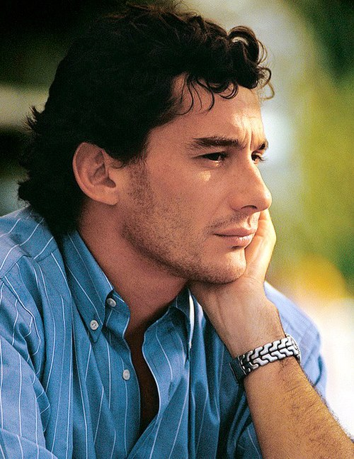
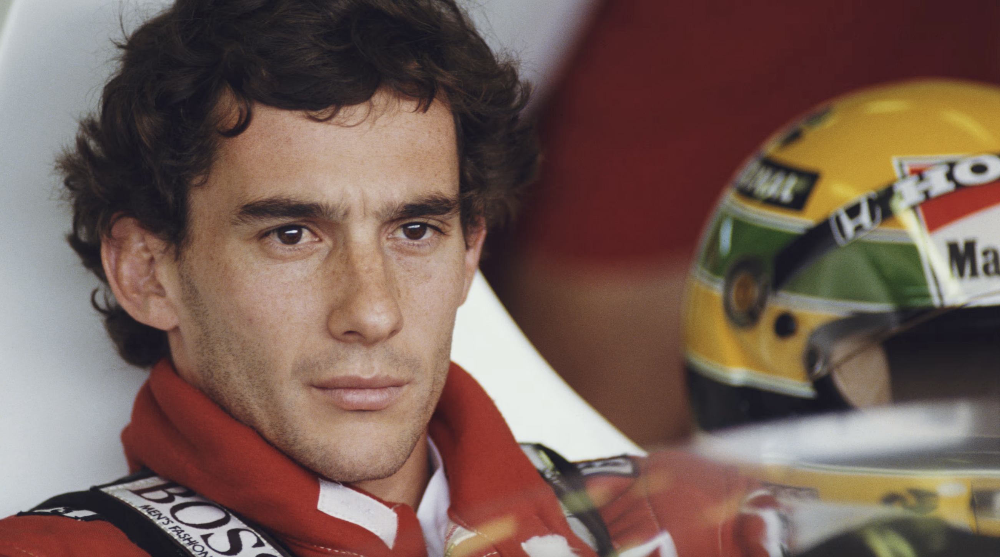
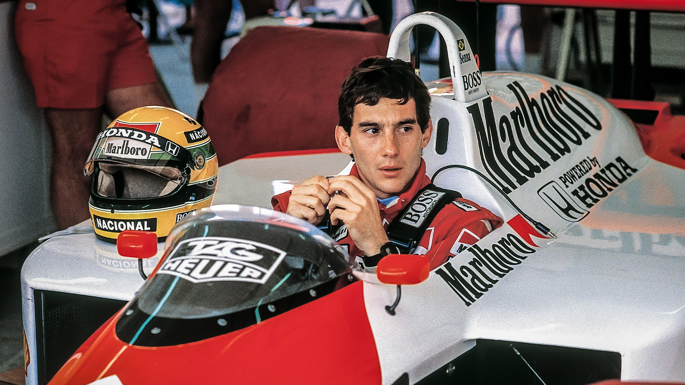
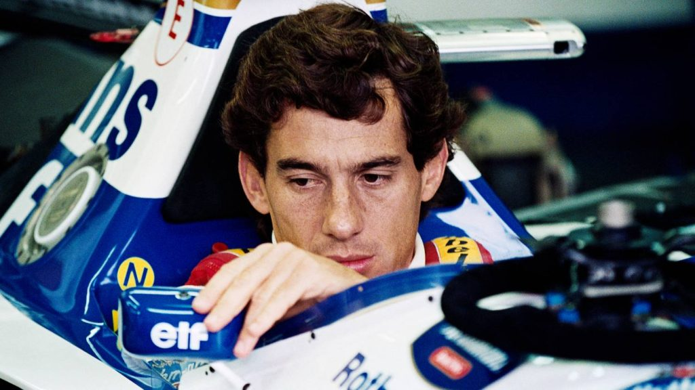
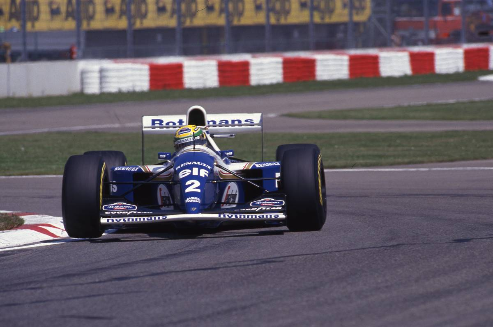
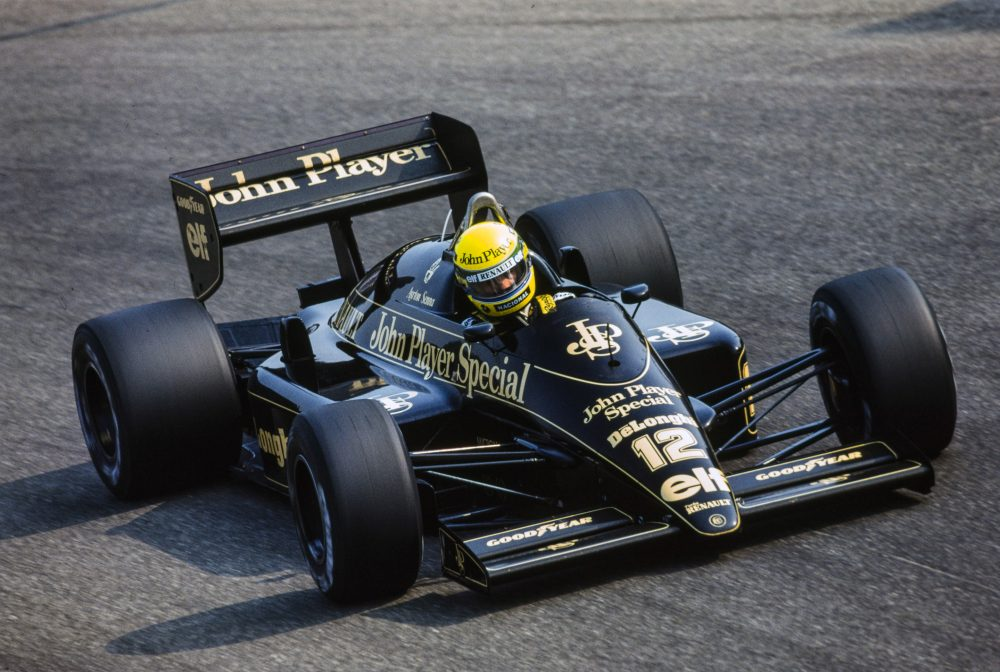
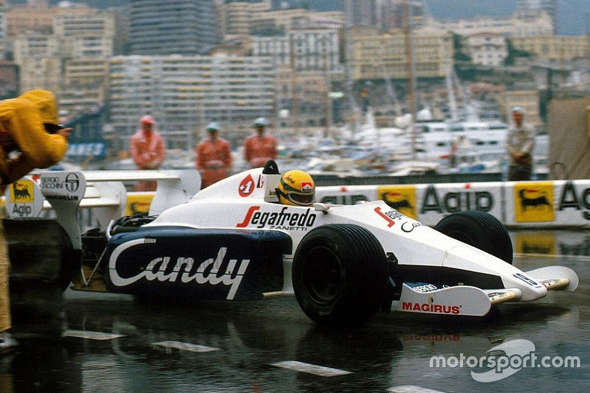
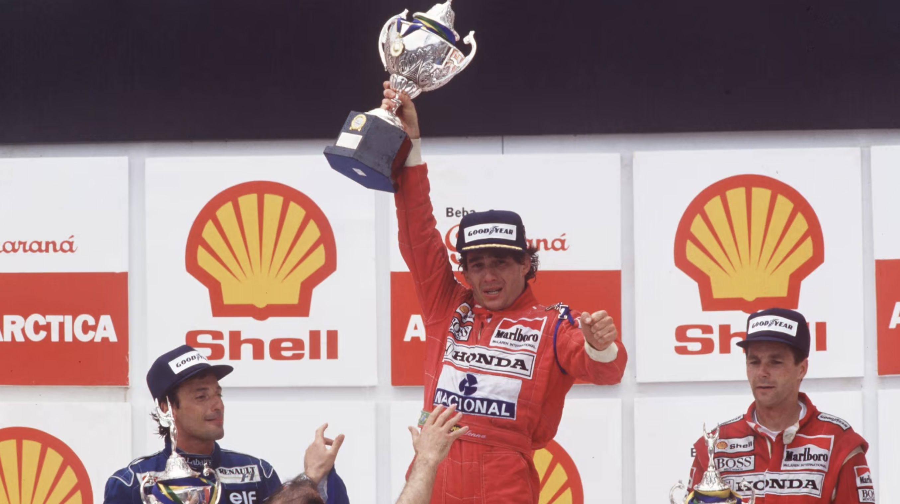
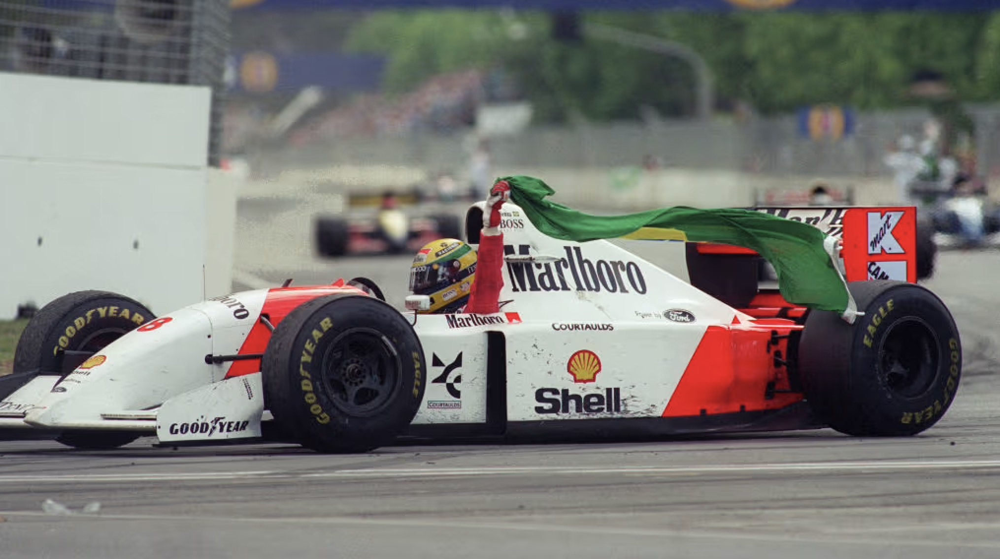
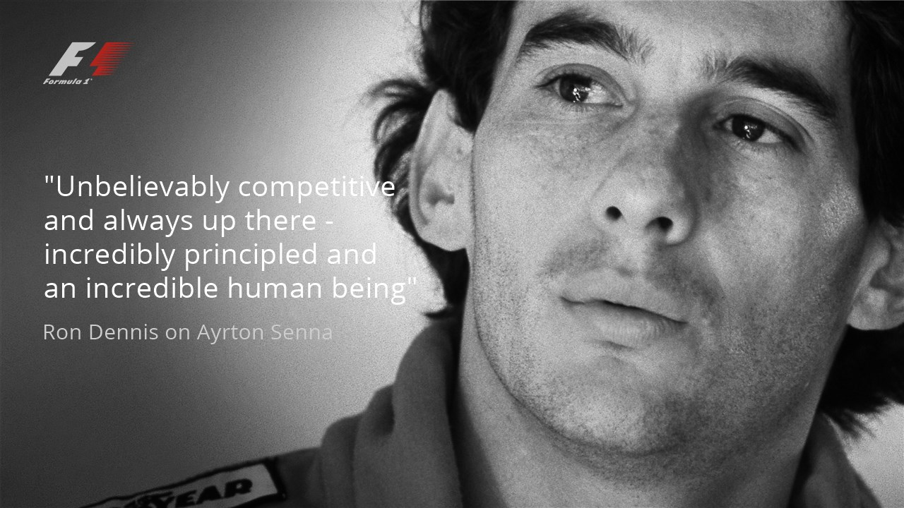

| A legsikeresebb brazil pilóta 161 futamon indult el, ebből 41-et nyert meg, 23-on második, 16-on harmadik lett, 50-et nem fejezett be. 65 első rajtkockát szerzett és 19 versenyen futotta meg a leggyorsabb kört. 86 nagydíjon állt legalább egy körön át az élen, összesen pedig 2987 kört teljesített az első helyen. Pályafutása során 610 pontot gyűjtött. | |
|---|---|
| Kategória | Formula–1-es világbajnokság |
| Aktív évei | 1984 – 1994 |
| Csapatai | Toleman, Lotus, McLaren, Williams |
| Nagydíjak száma | 162 (161 rajt) |
| Világbajnoki címek | 3 (1988, 1990, 1991) |
| Győzelmek | 41 |
| Dobogós helyezések | 80 |
| Első rajtkockák | 65 |
| Leggyorsabb körök | 19 |
| Első nagydíj | 1984-es brazil nagydíj |
| Első győzlem | 1985-ös portugál nagydíj |
| Legutolsó győzelem | 1993-as ausztrál nagydíj |
| Legutolsó nagydíj | 1994-es San Marinó-i nagydíj |








